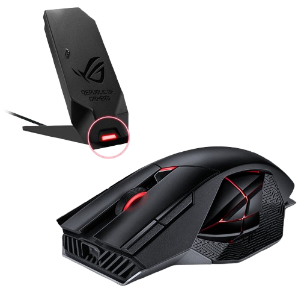
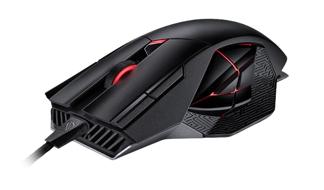

Features:
- Programmable 12-button design with advanced customization options
- Increased flexibility — play in wired or wireless RF 2.4 GHz modess
- Industry-leading 19,000 dpi optical sensor, plus 1000 Hz polling rate in both 2.4 GHz and wired modes
- Up to 67 hours of battery life in wireless mode with RGB off
- Exclusive push-fit switch sockets to customize click force and extend the lifespan of the mouse
- ROG Micro Switches offer consistent click force and 70-million-click lifespan
- Pivoted button mechanism for faster and more responsive mouse clicks
- DPI On-The-Scroll enables effortless accuracy adjustments
- ROG Paracord ensures a swift and smooth glide
- Exclusive Armoury Crate software for intuitive configuration of settings
Complete Command In Battle:
Complete Command in Battle Get into the fight with ROG Spatha X.
This wireless gaming mouse features dual-mode connectivity,
allowing you to play wirelessly via RF 2.4 GHz or traditionally with a wired USB-C® connection.
A specially tuned 19,000 dpi sensor lets you take down opponents swiftly with extreme accuracy,
while 12 programmable buttons ensure all commands are at your fingertips.
In addition, ROG Spatha X features exclusive push-fit switch sockets,
ROG Micro Switch, Aura Sync RGBs, and a magnetic charging dock.
Dual-Mode Connectivity:
Dual-mode connectivity lets you play your way.
ROG Spatha X utilizes an RF 2.4 GHz connection with high data throughput
to ensure your commands are tracked accurately in-game.
And once the battery runs out, just hook it up and continue the fight while charging,
all without losing responsiveness and performance.
Wireless Mode:
ROG Spatha X utilizes an RF 2.4 GHz connection with high data throughput
to ensure your commands are tracked accurately in-game.
Advanced Power Solution
ROG Spatha X offers phenomenal battery life,
giving you up to 67 hours of play time on a full charge.
And if the battery does run low, just 15 minutes of charging via USB-C
or the charging dock provides up to 12 hours* of intense wireless gaming.
Wired mode:
The Mouse comes with High quality Fast charging Type-C cable and can also be used as Wired-mode
With Mind-blowing charging speed of
15 min Charge for 12 hr Gameplay
*Tests performed with Aura lighting and Battery Notification mode turned off.
Battery life may vary in real-world conditions.